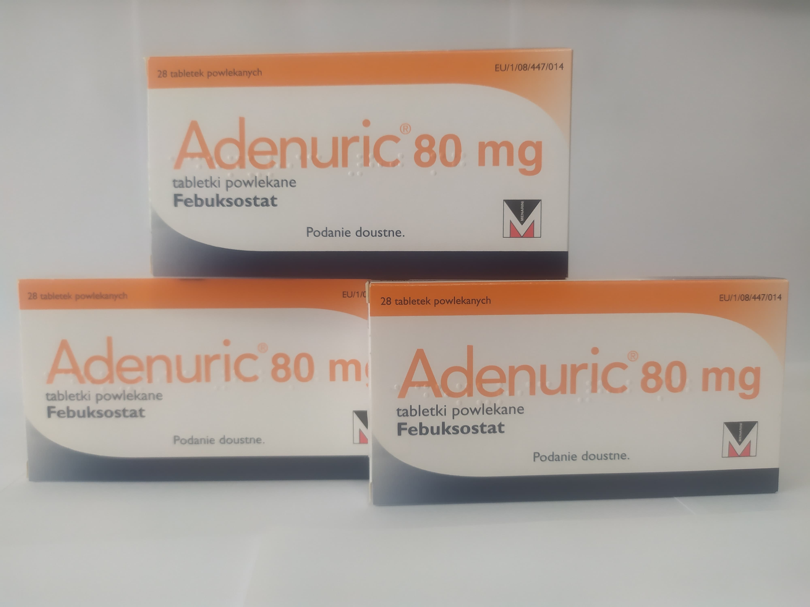

Контактна інформація:
Ціна: Уточнювати у менеджера
Під замовлення
Виробник: Франція
Ціна: Уточнювати у менеджера
Під замовлення
Саме в FarmItal ви можете купити Аденурік,Adenuric в Україні, Гарантовано Якісний!
Доставка Аденурік здійснюється транспортними компаніями, терміни виконання замовлення обумовлюються менеджером Фармітал. Ви можете замовити Аденурік капсули у містах: Одеса, Херсон, Чернігів, Сєверодонецьк, Бердянськ, Бровари, Дніпро, Вінниця, Київ, Слов'янськ, Полтава, Краматорськ, Біла Церква, Кам'янське, Маріуполь, Чернівці, Олександрія, Кам'янець-Подільський, Львів, Запоріжжя, Кропивницький, Житомир, Івано-Франківськ, Суми, Черкаси, Костянтинівка, Мелітополь, Кривий Ріг, Рівне, Луцьк, Нікополь, Павлоград, Ужгород, Кременчук, Лисичанськ, Хмельницький, Тернопіль, Харків, Миколаїв, а також в інших населених пунктах України.
Таблетки, вкриті плівковою оболонкою.
Лікарські засоби для лікування подагри. Лікарські засоби, що пригнічують утворення сечової кислоти.
Лікування хронічної гіперурикемії при захворюваннях, що супроводжуються відкладанням кристалів уратів, у тому числі при наявності тофусів та/або подагричного артриту в даний час чи в анамнезі.
Гіперчутливість до активної речовини або до будь-якої іншої допоміжної речовини препарату.
діюча речовина: 1 таблетка, вкрита плівковою оболонкою, містить фебуксостату 80 мг.
допоміжні речовини: лактози моногідрат, гідроксипропілцелюлоза, целюлоза мікрокристалічна, натрію кроскармелоза, магнію стеарат, кремнію діоксид колоїдний водний, полівініловий спирт, титану діоксид (Е 171), поліетиленгліколь, тальк, заліза оксид жовтий (Е 172).
Найчастішими побічними реакціями у клінічних дослідженнях та в процесі постмаркетингового нагляду були загострення (напади) подагри, порушення функції печінки, пронос, нудота, головний біль, висипання та набряки. Ці реакції мали, у більшості випадків, легкий та середній ступінь тяжкості. Під час постмаркетингового нагляду були повідомлення про серйозні реакції гіперчутливості на фебуксостат, деякі з них супроводжувалися системними реакціями.
Зберігати у недоступному для дітей місці. Не потребує особливих умов зберігання.